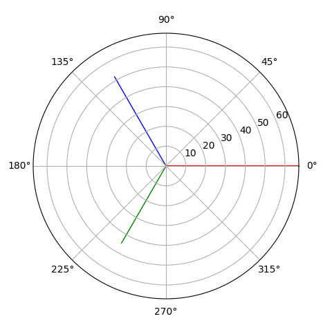

electricpy.phasor.phasorplot¶
- electricpy.phasor.phasorplot(phasor, title='Phasor Diagram', legend=False, bg=None, colors=None, radius=None, linewidth=None, size=None, label=False, labels=False, tolerance=None)[source]¶
Phasor Plotting Function.
This function is designed to plot a phasor-diagram with angles in degrees for up to 12 phasor sets (more may be used if additional colors are set). Phasors must be passed as a complex number set, (e.g. [ m+ja, m+ja, m+ja, … , m+ja ] ).
Examples
>>> import numpy as np >>> from electricpy import phasor >>> voltages = np.array([ ... [67,0], ... [45,-120], ... [52,120] ... ]) >>> plt = phasor.phasorlist( voltages, colors=["red", "green", "blue"] ) >>> plt.show()
- Parameters:
phasor (list of complex) – The set of phasors to be plotted.
title (string, optional) – The Plot Title, default=”Phasor Diagram”
legend (bool, optional) – Control argument to enable displaying the legend, must be passed as an array or list of strings. label and labels are mimic- arguments and will perform similar operation, default=False
bg (string, optional) – Background-Color control, default=”#d5de9c”
radius (float, optional) – The diagram radius, unless specified, automatically scales
colors (list of str, optional) – List of hexidecimal color strings denoting the line colors to use.
size (float, optional) – Control argument for figure size. default=None
linewidth (float, optional) – Control argument to declare the line thickness. default=None
tolerance (float, optional) – Minimum magnitude to plot, anything less than tolerance will be plotted as a single point at the origin, by default, the tolerance is scaled to be 1/25-th the maximum radius. To disable the tolerance, simply provide either False or -1.
- Returns:
matplotlib.pyplot – or plotting.
- Return type:
Plotting object to be used for additional configuration